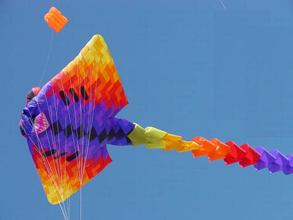
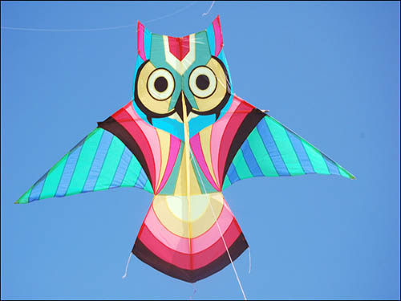

KT1 - Box Kite

kites have a bridle and tail to guide the face of the kite so the wind can lift it.This kites have a bridle and tail to guide the face of the kite so the wind can lift it.This kites have a bridle and tail to guide the face of the kite so the wind can lift it.This kites have a bridle and tail to guide the face of the kite so the wind can lift it.This kites have a bridle and tail to guide the face of the kite so the wind can lift it.This kites have a bridle and tail to guide the face of the kite so the wind can lift it.This kites have a bridle and tail to guide the face of the kite so the wind can lift it.This kites have a bridle and tail to guide the face of the kite so the wind can lift it.This kites have a bridle and tail to guide the face of the kite so the wind can lift it.This kites have a bridle and tail to guide the face of the kite so the wind can lift it.This kites have a bridle and tail to guide the face of the kite so the wind can lift it.This kites have a bridle and tail to guide the face of the kite so the wind can lift it.This kites have a bridle and tail to guide the face of the kite so the wind can lift it.This kites have a bridle and tail to guide the face of the kite so the wind can lift it.This kites have a bridle and tail to guide the face of the kite so the wind can lift it.This kites have a bridle and tail to guide the face of the kite so the wind can lift it.This kites have a bridle and tail to guide the face of the kite so the wind can lift it.This kites have a bridle and tail to guide the face of the kite so the wind can lift it.This kites have a bridle and tail to guide the face of the kite so the wind can lift it.This kites have a bridle and tail to guide the face of the kite so the wind can lift it.
KT2 - Angel Fish

kites have a bridle and tail to guide the face of the kite so the wind can lift it.This kites have a bridle and tail to guide the face of the kite so the wind can lift it.This kites have a bridle and tail to guide the face of the kite so the wind can lift it.This kites have a bridle and tail to guide the face of the kite so the wind can lift it.This kites have a bridle and tail to guide the face of the kite so the wind can lift it.This kites have a bridle and tail to guide the face of the kite so the wind can lift it.This kites have a bridle and tail to guide the face of the kite so the wind can lift it.This kites have a bridle and tail to guide the face of the kite so the wind can lift it.This kites have a bridle and tail to guide the face of the kite so the wind can lift it.This kites have a bridle and tail to guide the face of the kite so the wind can lift it.This kites have a bridle and tail to guide the face of the kite so the wind can lift it.This kites have a bridle and tail to guide the face of the kite so the wind can lift it.This kites have a bridle and tail to guide the face of the kite so the wind can lift it.This kites have a bridle and tail to guide the face of the kite so the wind can lift it.This kites have a bridle and tail to guide the face of the kite so the wind can lift it.This kites have a bridle and tail to guide the face of the kite so the wind can lift it.This kites have a bridle and tail to guide the face of the kite so the wind can lift it.This kites have a bridle and tail to guide the face of the kite so the wind can lift it.This kites have a bridle and tail to guide the face of the kite so the wind can lift it.This kites have a bridle and tail to guide the face of the kite so the wind can lift it.
KT3 - Clown Kite

kites have a bridle and tail to guide the face of the kite so the wind can lift it.This kites have a bridle and tail to guide the face of the kite so the wind can lift it.This kites have a bridle and tail to guide the face of the kite so the wind can lift it.This kites have a bridle and tail to guide the face of the kite so the wind can lift it.This kites have a bridle and tail to guide the face of the kite so the wind can lift it.This kites have a bridle and tail to guide the face of the kite so the wind can lift it.This kites have a bridle and tail to guide the face of the kite so the wind can lift it.This kites have a bridle and tail to guide the face of the kite so the wind can lift it.This kites have a bridle and tail to guide the face of the kite so the wind can lift it.This kites have a bridle and tail to guide the face of the kite so the wind can lift itThis kites have a bridle and tail to guide the face of the kite so the wind can lift it.This kites have a bridle and tail to guide the face of the kite so the wind can lift it.This kites have a bridle and tail to guide the face of the kite so the wind can lift it.This kites have a bridle and tail to guide the face of the kite so the wind can lift it.This kites have a bridle and tail to guide the face of the kite so the wind can lift it.This kites have a bridle and tail to guide the face of the kite so the wind can lift it.This kites have a bridle and tail to guide the face of the kite so the wind can lift it.This kites have a bridle and tail to guide the face of the kite so the wind can lift it.This kites have a bridle and tail to guide the face of the kite so the wind can lift it.This kites have a bridle and tail to guide the face of the kite so the wind can lift it..
KT4 - Stingray

kites have a bridle and tail to guide the face of the kite so the wind can lift it.This kites have a bridle and tail to guide the face of the kite so the wind can lift it.This kites have a bridle and tail to guide the face of the kite so the wind can lift it.This kites have a bridle and tail to guide the face of the kite so the wind can lift it.This kites have a bridle and tail to guide the face of the kite so the wind can lift it.This kites have a bridle and tail to guide the face of the kite so the wind can lift it.This kites have a bridle and tail to guide the face of the kite so the wind can lift it.This kites have a bridle and tail to guide the face of the kite so the wind can lift it.This kites have a bridle and tail to guide the face of the kite so the wind can lift it.This kites have a bridle and tail to guide the face of the kite so the wind can lift it.This kites have a bridle and tail to guide the face of the kite so the wind can lift it.This kites have a bridle and tail to guide the face of the kite so the wind can lift it.This kites have a bridle and tail to guide the face of the kite so the wind can lift it.This kites have a bridle and tail to guide the face of the kite so the wind can lift it.This kites have a bridle and tail to guide the face of the kite so the wind can lift it.This kites have a bridle and tail to guide the face of the kite so the wind can lift it.This kites have a bridle and tail to guide the face of the kite so the wind can lift it.This kites have a bridle and tail to guide the face of the kite so the wind can lift it.This kites have a bridle and tail to guide the face of the kite so the wind can lift it.This kites have a bridle and tail to guide the face of the kite so the wind can lift it.
KT5 - Owl

kites have a bridle and tail to guide the face of the kite so the wind can lift it.This kites have a bridle and tail to guide the face of the kite so the wind can lift it.This kites have a bridle and tail to guide the face of the kite so the wind can lift it.This kites have a bridle and tail to guide the face of the kite so the wind can lift it.This kites have a bridle and tail to guide the face of the kite so the wind can lift it.This kites have a bridle and tail to guide the face of the kite so the wind can lift it.This kites have a bridle and tail to guide the face of the kite so the wind can lift it.This kites have a bridle and tail to guide the face of the kite so the wind can lift it.This kites have a bridle and tail to guide the face of the kite so the wind can lift it.This kites have a bridle and tail to guide the face of the kite so the wind can lift it.This kites have a bridle and tail to guide the face of the kite so the wind can lift it.This kites have a bridle and tail to guide the face of the kite so the wind can lift it.This kites have a bridle and tail to guide the face of the kite so the wind can lift it.This kites have a bridle and tail to guide the face of the kite so the wind can lift it.This kites have a bridle and tail to guide the face of the kite so the wind can lift it.This kites have a bridle and tail to guide the face of the kite so the wind can lift it.This kites have a bridle and tail to guide the face of the kite so the wind can lift it.This kites have a bridle and tail to guide the face of the kite so the wind can lift it.This kites have a bridle and tail to guide the face of the kite so the wind can lift it.This kites have a bridle and tail to guide the face of the kite so the wind can lift it.
KT6 - Wau Bulan
 kites have a bridle and tail to guide the face of the kite so the wind can lift it.This kites have a bridle and tail to guide the face of the kite so the wind can lift it.This kites have a bridle and tail to guide the face of the kite so the wind can lift it.This kites have a bridle and tail to guide the face of the kite so the wind can lift it.This kites have a bridle and tail to guide the face of the kite so the wind can lift it.This kites have a bridle and tail to guide the face of the kite so the wind can lift it.This kites have a bridle and tail to guide the face of the kite so the wind can lift it.This kites have a bridle and tail to guide the face of the kite so the wind can lift it.This kites have a bridle and tail to guide the face of the kite so the wind can lift it.This kites have a bridle and tail to guide the face of the kite so the wind can lift it.This kites have a bridle and tail to guide the face of the kite so the wind can lift it.This kites have a bridle and tail to guide the face of the kite so the wind can lift it.This kites have a bridle and tail to guide the face of the kite so the wind can lift it.This kites have a bridle and tail to guide the face of the kite so the wind can lift it.This kites have a bridle and tail to guide the face of the kite so the wind can lift it.This kites have a bridle and tail to guide the face of the kite so the wind can lift it.This kites have a bridle and tail to guide the face of the kite so the wind can lift it.This kites have a bridle and tail to guide the face of the kite so the wind can lift it.This kites have a bridle and tail to guide the face of the kite so the wind can lift it.This kites have a bridle and tail to guide the face of the kite so the wind can lift it.
kites have a bridle and tail to guide the face of the kite so the wind can lift it.This kites have a bridle and tail to guide the face of the kite so the wind can lift it.This kites have a bridle and tail to guide the face of the kite so the wind can lift it.This kites have a bridle and tail to guide the face of the kite so the wind can lift it.This kites have a bridle and tail to guide the face of the kite so the wind can lift it.This kites have a bridle and tail to guide the face of the kite so the wind can lift it.This kites have a bridle and tail to guide the face of the kite so the wind can lift it.This kites have a bridle and tail to guide the face of the kite so the wind can lift it.This kites have a bridle and tail to guide the face of the kite so the wind can lift it.This kites have a bridle and tail to guide the face of the kite so the wind can lift it.This kites have a bridle and tail to guide the face of the kite so the wind can lift it.This kites have a bridle and tail to guide the face of the kite so the wind can lift it.This kites have a bridle and tail to guide the face of the kite so the wind can lift it.This kites have a bridle and tail to guide the face of the kite so the wind can lift it.This kites have a bridle and tail to guide the face of the kite so the wind can lift it.This kites have a bridle and tail to guide the face of the kite so the wind can lift it.This kites have a bridle and tail to guide the face of the kite so the wind can lift it.This kites have a bridle and tail to guide the face of the kite so the wind can lift it.This kites have a bridle and tail to guide the face of the kite so the wind can lift it.This kites have a bridle and tail to guide the face of the kite so the wind can lift it.